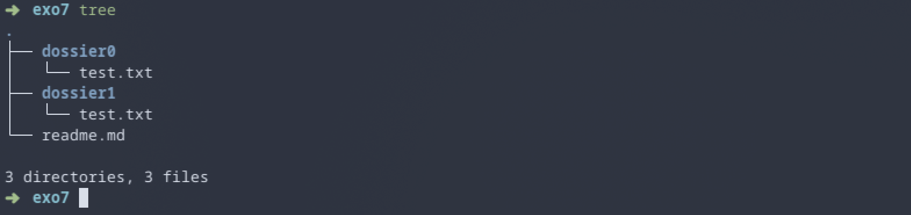

Lab 1 - Prerequisites - Linux, the shell, Git¶
Objective¶
In this lab, you will get familliar with the very basics of using the linux shell, using and installing a code editor, and setup git.
The final section of this lab will have you combine all this tools to setup a simple project for a Hello World program in C.
0 - Linux¶
Linux is a family of Operating Systems (like Windows or MacOS) that are suited for programming. Most High-Performance clusters will run a version of linux, and as such it is mandatory that you learn how to use it.
If you have a personal laptop, I highly recommend you to setup linux (Or MacOS) on it. Alternatively, you can use Docker or a virtual machine on Windows, but note that this is highly impractical. Lastly, you can setup and use WSL.
Tip
The university may be able to lend laptops while you're on-site, but you likely won't be able to bring them home for assignments.
1 (Optional) - Installing Fedora¶
If you want to install Linux on your personal laptop but aren’t sure where to start, you can follow these instructions.
Fedora is a modern, open-source Linux distribution sponsored by Red Hat. It ships with the GNOME 3 desktop environment by default and uses dnf as its package manager.
If you're new to Linux and want something simple to use, Fedora is a great place to start.
2 - The linux Shell and Bash¶
On Windows/MacOS, you most likely use the file manager or other graphical interfaces to interact with your computer. On linux however, we use the Linux Shell via a terminal/console.

The shell is a very powerful tool that allows you to interact with your computer in many ways. We will only cover the basics in this lab.
a) First, try starting a new terminal¶
Look for an app called terminal, console or even konsole. In some linux distribution, CTRL+ALT+T will open a new terminal.
- A
terminalis the graphical application displaying the text. - A
shellis the underlying program that interprets and executes commands that you provide. By default, your shell will probably bebash, which is one of the most basic shells available. All shells serve the same function, but some come with plugins and other tools to make your life easier.
Warning
To copy/paste in your terminal you must use CTRL+SHIFT+C and CTRL+SHIFT+V. Pressing
CTRL+C will KILL (stop) the current command.
If you press CTRL+S, this will put the terminal on hold. Nothing will display anymore. Press CTRL+Q to re-enable your terminal
1. Basic Exercices¶
We will now dive in the very basics on how to use the shell. Note that the exercices presented here are minimal, and there's much to discover.
Lines starting with a # are comments and should not be executed.
a) Try inputing the following commands. What does the ls command do ?¶
b) Run the following commands step-by-step and try to understand what is happening:¶
What doesmkdir do ? cd ?
c) Based on the previous question, could you give a definition for the term "Current Working Directory" (CWD) ?¶
Execute the following to confirm your definition:
d) Execute the following step-by-step:¶
echo "Bonjour"
echo "Bonjour, mon username est $USER et mon home est dans $HOME"
echo "Bonjour" > bonjour.txt
ls
cat ./bonjour.txt
ls -lah > ./bonjour.txt
cat ./bonjour.txt
- What does
echodo ? What is yourUSERand yourHOME? - What does the
>operator do ? (Tips: Did you see the output of this command in your terminal ?) - What does
catdo ?
e) Execute the following:¶
- Did the last command (
mkdir lab1) work ? Why not ? - What does
cd ..do ? What does..mean ? - Execute these commands:
pwd,realpath .,realpath ..,realpath ~/glhpc/lab1/..
f) Run the following:¶
What do you see ? Try to find the mkdir flag to disable errors on existing folders, so that mkdir lab1 runs succesfully.
Press the q key to exit man.
Tip
What you just saw is called a man page. man is short for manual. It's an offline documentation that is always available on all shells.
Some tools also provide man pages when installed, so that you can always search for documentation. You can even search man man !
If you're ever stuck on a problem/bug (and you will), you should always read the documentation, or the man pages, for solutions. Googling a bug or an error message is not cheating. This is commonly referred to as Read The F*cking Manual (RTFM).
2. More Exercices¶
a) Find what ~ is the shortcut for¶
b) Create the following file structure using only your terminal:¶
exo7/
readme.md # With the text "Bonjour !"
dossier0/
test.txt # With the text "test0"
dossier1/
test.txt # With the text "test1"
This directory should be located inside ~/glhpc/lab1/exo7
It should look something like this (the tree command may not be available on your shell):

c) Finally, run the following from ~/glhpc/lab1¶
What does cp do ? Why do we use the -r flag ?
The rm command is used to remove files, while the rmdir command is used to delete empty folders. In order to delete a folder, and all the files it contains, we must use the --force and --recursive flags, also known as rm -rf.
Try the following:
Danger
rm -rf is definitive: there is no way to recover your files after this. No trashbin. If you delete an important folder, it is gone forever.
You should always be very careful when doing this.
Thought experiment: what would happen if you were to run rm -rf /, where / is the root of your filesystem ? In modern shells, it will probably show an error, or ask for confirmation, but yes, this could instantly erase all of your files, including your operating system, and crash your computer.
3. Cheatsheet üêç¶
| Goal | Command | Variants |
|---|---|---|
| Create a directory | mkdir <path> |
mkdir -p <path> to ignore errors |
| Go inside a directory | cd <path> |
cd .. to go up one level, cd ~ to go to your home |
| List all files | ls (<path>) |
ls -lah (<path>) for pretty print with human-readable numbers. Show hidden files |
| Print cwd | pwd |
|
| Convert to absolute path | realpath (<path>) |
|
| Print text | echo <text> |
echo $<VARIABLE> to print a variable |
| Redirect output to file | > |
Example: echo "Bonjour" > test.txt |
| Print file content | cat <path> |
For big files: less <path> |
| Delete a file | rm <path> |
|
| Delete a directory | rmdir <path> |
Delete a non empty directory rm -rf <path> |
| Create empty file | touch <path> |
|
| Copy a file | cp <input> <output> |
cp -r <input> <output> to copy folders recursively |
4. (Going-Further) Upgrading bash¶
While powerful, bash is a very basic shell. Some shells like fish or oh-my-zsh come with extensions/plugins that can significantly improve your workflow, with auto-completion, coloring, suggestions and many other.
In the near future, you will spend a lot of time in your programming environment. Taking a few hours making it more practical or comfortable is a worthwhile investement.
A minimalist oh-my-zsh setup is described here. fish is very simple to install and pretty powerful, but I do not recommend it due to some bash incompatibilities.
3 - (Optional) Code Editor (VSCode)¶
We are now going to see the second most critical tool you will use during the Master, second only to the shell: a code editor. Modern code editors allow you to open source files, images, pdf, or even videos. You use your editor to create programs, and the shell to execute them.

As a starting point, you should download VSCode which will cover most of your needs in the future. Do NOT listen to your obnoxious classmates telling you to "just use vim". They cannot be saved.
1. Installation:¶
a) Direct download¶
Go to the VSCode Website and select the option matching your OS. For Fedora, click on the .rpm button.
Then double click on the downloaded .rpm file to automatically install VSCode.
You can achieve the same effect using:
b) Snap install¶
Snap is a very helpful application to automatically install, update, and manage third-party tools (VSCode, pycharm, Spotify, etc.)
c) Usage¶
Using your shell navigate to the directory you wish to open in VSCode:
From there, try creating a file, installing extensions (Python, C++, cmake, etc.) and familiarize yourself with the shortcuts.
Tip
You can also open a terminal directly inside VSCode !
The shortcut should be CTRL+J, but you can always use the terminal menu.
4 - Getting ready for git¶
A critical part of programming is called "versionning" or "Version Control System" (VCS). This answers the following questions:
- How can I share my code with my colleagues / classmates / friends / everyone ?
- How can I keep a history of the different versions of my code ? Say
version 1.0,v2.0,v3.0.1.alpha-prelease, etc. - How can multiple people work together on the same project ?
We will dive into git later. For now, do the following:
a) Create a Github account if you don't already have one.¶
You may wish to keep this account after the master: you should use your personal email so you won't lose acces to it.
You should setup two factor authentication (2FA) ASAP.
Note
Your github page is your portfolio. Your recruiter may look it up, or you may be able to bring it up during interviews to show projects you worked on previously.
You should take care of it, and have a few clean projects to show !
b) Follow the official guide on how to generate and add an ssh key to your github account.¶
5 - First C Project¶
1. Creating the project¶
a) Create the following file structure:¶
Try to do this only using the shell. If you're using VSCode you can cd into first_c_project and run code .
b) Modify main.c so that it contains:¶
#include <stdio.h>
#include <stdlib.h>
int main(int argc, char** argv) {
printf("Hello World !");
return 0;
}
c) Create a .gitignore text file inside the first_c_project folder, with the content:¶
A .gitignore file act as a recursive filter for git: all files that match a pattern contained in the .gitignore will be ignored and invisible to git.
The * character is called a wildcard: it matches everything. For example, the *.o pattern will filter the files main.o, aaababa.o, etc.
2. Setup git¶
Please refer to Lecture 1 for all the git commands you will need in this section.
a) Initialize a new git repository inside the lab1 folder.¶
b) Run git status, then stage all files from first_c_project as well as .gitignore in git.¶
c) Create a first commit with the message "My first commit"¶
I recommend you use the command git commit -m "<message>" or git may open nano/vim for you to edit the commit message, which may be confusing.
d) Ensure the commit worked:¶
git log should display the previous commit, and git status should no longer display the content of first_c_project. Feel free to commit files from the previous exercises of the lab if you want.
3. Compiling and running C code¶
We will now try to run our first program, but before that we need to install a few tools.
a) Install GCC¶
First, we need a C compiler to transform the main.c file into an executable. We will see in future courses what this does.
For now, install the following packages:
b) Check GCC is working¶
Run the following:
gcc (GCC) 14.3.1 20250808 (Red Hat 14.3.1-3)
Copyright (C) 2024 Free Software Foundation, Inc.
This is free software; see the source for copying conditions. There is NO
warranty; not even for MERCHANTABILITY or FITNESS FOR A PARTICULAR PURPOSE.
c) Compiling main.c¶
You can now compile your first program by running
You should see that a main file has been created for you.
d) Run main¶
Run the program by using ./main
4. First compilation script¶
a) Create a build.sh script that contains the compilation command.¶
b) Try to run ./build.sh. Does it work ?¶
Linux uses a concept of file permissions: some files can be read, written to, executed, or a mix of the previous. These permissions are user dependent: you are allowed to read your own files, but this privilege should not extend to other users.
Run the following:
rw-r--r-- can be read as:
- The user can Read and Write
- The group can Read
- Others can Read
c) Make build.sh executable¶
Run the following:
chmod is a command to modify the permissions of a file. x designates the eXecution permission, so this command can be read as add execution permission to build.sh.
You should see that the file now has permissions rwxr-xr-x. This can be read as:
- The user can Read, Write, and eXecute
- The Group can Read and eXecute
- Others can Read and eXecute
d) Restrict permissions so that only you (the owner) can read, write, and execute build.sh. Neither the group nor others should have any permissions.¶
In binary:
rwx= 111 = 7r-x= 101 = 5r--= 100 = 4
One can write chmod 444 ./build.sh which translates to r--r--r-- (100 100 100).
Use this to find the command needed to only give permissions to yourself.
5. Uploading to GitHub¶
a) Commit all changes you've made so far to git¶
Tip
Git is recursive: it doesn't matter whether you run the git commands from lab1 or first_c_project: git knows whether the cwd is contained inside a git repository.
b) Create an empty repository on the GitHub website¶
Make sure the repository is empty, or you'll have to force push later on to overwrite it.
c) Setup the remote on your local repository¶
On the github website, you should see a green code button with an ssh option. Copy the link here. It should look something like:
Then run:
This registers the GitHub repository repository as the remote repository. Origin is the name of the remote.d) Push on GitHub¶
The first time you push on the repository, git might:
- Ask you to setup your email/username: Follow git instructions and make sure to use the same as the one you've used on GitHub.
- Set the upstream branch using
--set-upstream: Follow git instructions
5 - Summary¶
Upon completing this first lab, you should:
- Have a working programming environment
- Know how to navigate the file system with the shell
- Know how to use basic file operations
- Know how to use VSCode to write and edit files
- Be ready to use git with Github